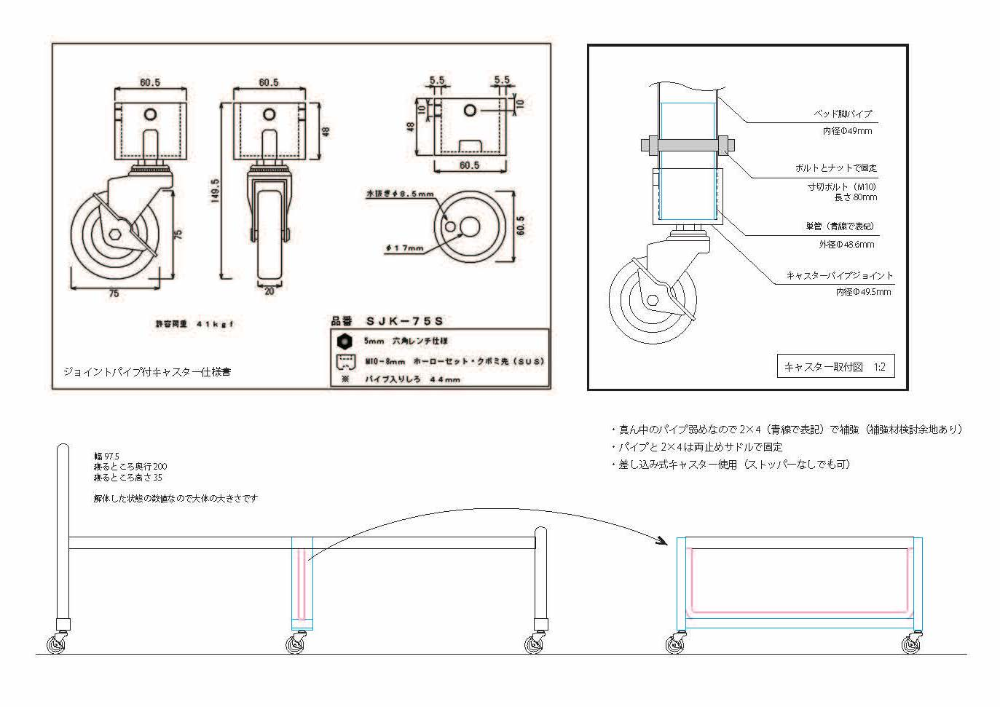

ふとんで寝ながらさんぽしたい 黒木結

いつもじゃなくていいんだけど、ふとんから出たくないときがある。
わたしも友達も、たまにそんな感じの日があって、そんなときに会う約束をしていたりすると「じゃあ今日はいいよ〜また起きたい時にね」て言ったり、言われたりする。
ビートルズのI'm only sleepingでは、ふとんで寝ている人は怠け者だと言われてて、せわしなくあちこち回って忙しい人たちはおかしいんだと言われている。
わたしは、ふとんで寝ている人が怠け者だとも思わないし、忙しくしている人がおかしいとも思わなくて、ただ加速したり減速するタイミングが違うだけなんだと思っている。
忙しくしている人たちはこの機会にスピードを落として、ふとんで寝ながらさんぽしている人と歩みを同じくして、減速する準備をしてみてもいいかも。
そうすると、ふとんで寝ながらさんぽしたい人も、忙しくしても、いつでもふとんに戻ってこれることが分かって、安心して加速したり減速したりできるんじゃないかなあと思う。